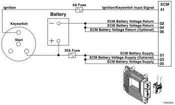
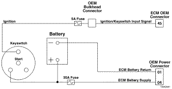
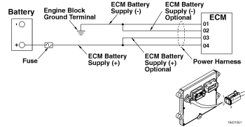

Código de Falha 1117
|
| CÓDIGO | RAZÃO | EFEITO |
| Código de Falha: 1117 PID: S251 SPN: 627 FMI: 2/2 LÂMPADA: Nenhuma SRT: |
Perda da Fonte de Alimentação com a Chave de Ignição Ligada - Dados Inválidos, Intermitentes ou Incorretos. A voltagem de alimentação para o ECM caiu abaixo de 6,2 VCC momentaneamente, ou o ECM não foi desligado corretamente (retendo voltagem da bateria por 30 segundos depois de desligada a chave de ignição). |
Possivelmente nenhum efeito perceptível de desempenho, ou o motor será desligado ou será necessária a partida manual. As informações de códigos de falha, as informações de viagem e os dados do monitor de manutenção podem ser imprecisos. |
|
 ISF2.8 CM2220 E/ISF2.8 CM2220 AN/ISF3.8 CM2220 AN - Circuito de Alimentação do ECM
|
|
 ISB4.5, ISB6.7, ISD4.5, e ISD6.7 CM2150 SN/ISL8.9 CM2150 SN/ISZ13 CM2150 - Sensor de Alimentação do ECM
|
|
 ISM11 CM876 SN - Circuito de Alimentação do ECM
|
O ECM recebe voltagem constante das baterias através de fios de alimentação não-comutada que são conectados diretamente no terminal positivo (+) das baterias. O ECM recebe informações de alimentação não-comutada das baterias através da fiação da chave de ignição do veículo quando esta é ligada (posição ON).
O ECM está conectado à bateria pelo chicote elétrico do OEM através do parafuso de alimentação da bateria do ECM. Isto fornece uma fonte constante de energia para o ECM. A localização da bateria varia de acordo com o fabricante do equipamento original (OEM).
Este diagnóstico é executado continuamente quando a chave de ignição encontra-se na posição ON.
O ECM detecta que a fonte de alimentação primária do ECM caiu abaixo de um valor calibrável enquanto a chave de ignição encontrava-se na posição ON. O código de falha se tornará ativo quando a chave de ignição for ligada após o evento de parada incompleto.
Para validar o reparo, dê partida no motor, deixe-o funcionar em marcha lenta durante 1 minuto e desligue-o corretamente. O ECM deverá detectar uma voltagem adequada da bateria do ECM quando a chave de ignição for desligada (OFF) antes de desativar o código de falha.
Para motores equipados com sistema de pós-tratamento de SCR:
Para todos os outros motores:
Certifique-se de que a alimentação não-comutada da bateria do ECM seja fornecida diretamente pela bateria e não pelo motor de partida. Se o motor de partida estiver fornecendo alimentação não-comutada, é possível que a voltagem da bateria caia para um nível baixo o suficiente durante o giro de partida para tornar ativa esta falha.
Esta falha também pode ser causada pela resistência nos circuitos (+) ou (-) de alimentação da bateria do ECM. A resistência nesses circuitos pode fazer o nível de voltagem na entrada do ECM cair para um valor baixo o suficiente para tornar ativo o Código de Falha 1117.
O uso de interruptores de desconexão da bateria para desligar o motor, ou de qualquer dispositivo para desconectar a voltagem da bateria para o ECM em até 10 segundos depois que a chave de ignição é desligada pode causar danos no sistema de pós-tratamento. O veículo não deve ser operado com um Código de Falha 1117 ativado.
Consulte o diagnóstico do Código de Falha 1117.